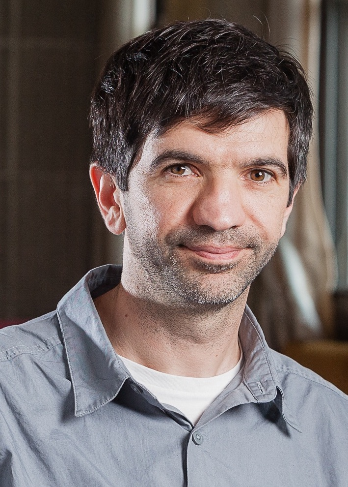

Serdar Yüksel
Professor, Queen's
University
Department of
Mathematics and Statistics
Contact: Phone: (613) 533 2429 / E-mail: yuksel
(at) queensu.ca
Publications / Research Group / Teaching / Some
Activities /
Biography
Our group's general research theme is the interaction of
control, probability, and information.
Control theory:
stochastic control theory, information and control,
reinforcement learning, robustness
Information theory:
Optimal quantization and coding, information theory in
control and games
Probability: non-linear
filtering, learning theory
Research Groups at Queen's: Applied
Mathematics / Probability
/ Control
Theory / Information
Theory
Graduate
studies in our department
Mathematics and Engineering
Program
|

|